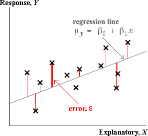

Outliers and errors
In a scatterplot, cross that is unusually far above or below the regression line is an outlier. It would correspond to a large error, ε.
Standardised residuals
The least squares residuals are estimates of the unknown errors and can be used in a similar way to give information about whether there is an outlier.
 
To help assess the residuals, we usually standardise them — dividing each by an estimate of its standard deviation.
| standardised residual = | e |
| se |
Large residuals pull very strongly on the line since they are squared in the least squares criterion. As a result,
Outliers will strongly pull the least squares line towards themselves, making their residuals smaller than you might otherwise expect.
Leverage
If an outlier corresponds to an x-value near its mean, it usually will have a large residual,

However if the outlier occurs at an extreme x-value, it has a stronger influence on the position of the least squares line than the other data points. Such points are called high leverage points and pull the least squares line strongly towards them. Outliers that are high leverage points may therefore result in residuals that do not stand out from the other residuals.